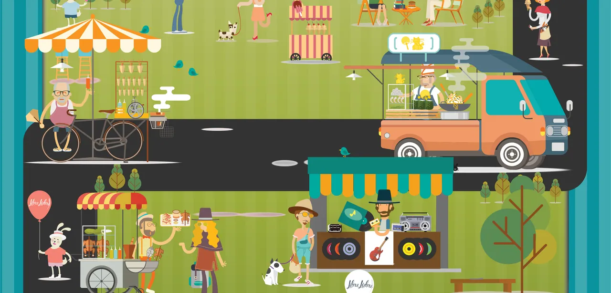
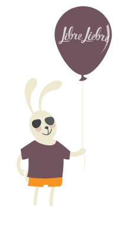
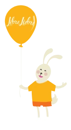
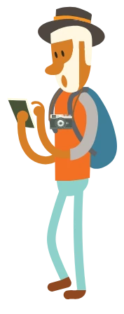
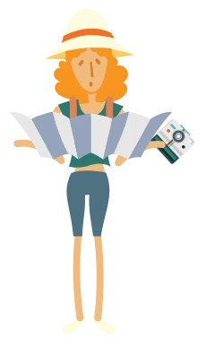
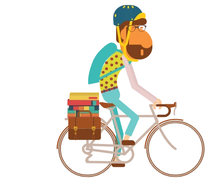
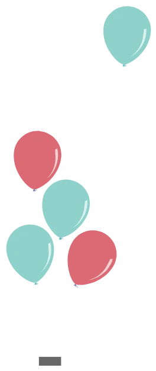
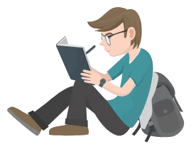
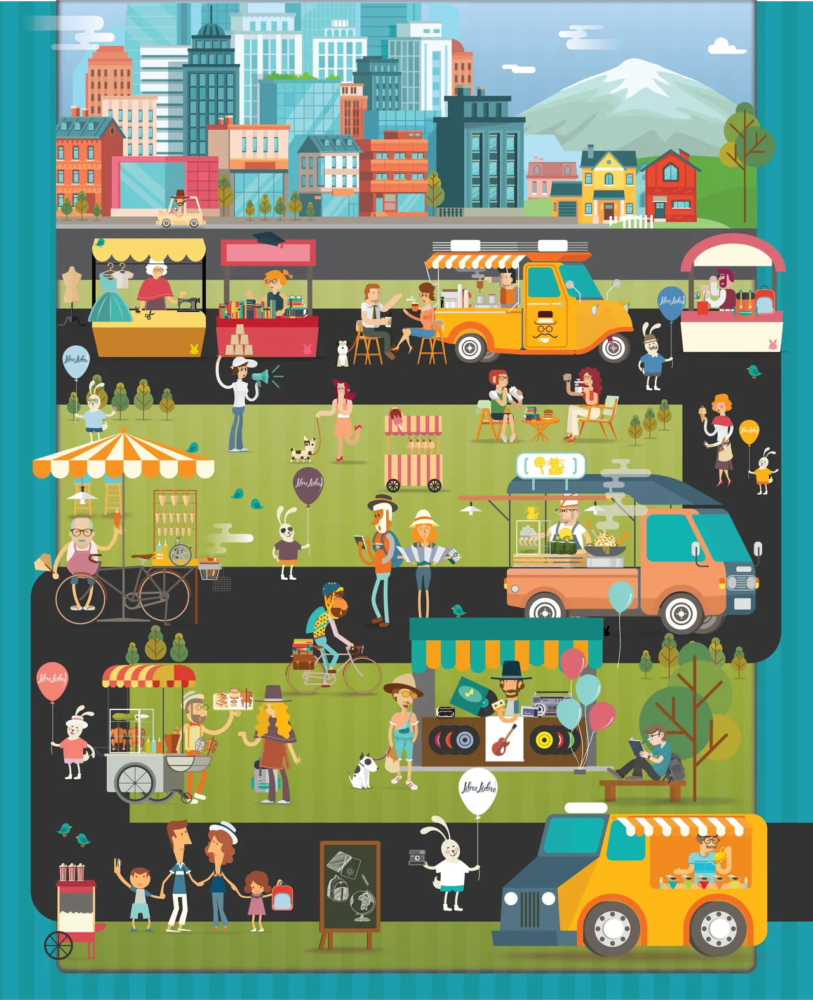

Concept, Art Direction & Brand Experience
One Immersive Brand Experience
Food Truck Station set out to give Mexico City’s food trucks a home: stations in parks and plazas, and themed weekends where dozens of trucks gather. The brand had to feel like the place itself, somewhere you wander into and want to stay.
I developed the concept: a city park crowded with characters, trucks and stalls, in the spirit of a search-and-find puzzle, with a rabbit (the “liebre” of Libre Liebre) hiding in it. I composed it from many separate pieces into one coherent world, then art-directed it as a system, so one scene could become a poster, a truck wrap, a billboard, a press release and a season of event posters, all recognizably the same world.
- Role
- Concept, Art Direction & Design
- Client
- Food Truck Station · Mexico City
- Project
- Brand Campaign & Event Collateral
- Years
- 2014–2016

Event Campaign
Libre Liebre Bazar
Concept & Art Direction · Back to School weekend
A three-day market weekend in Colonia Roma, pet and bike friendly. The poster is Mexico City at its most vibrant, with little surprises hiding in it for you to find. The dates and the address are tucked underneath.
One scene, many formats
I cropped and extended the same illustration for each format, from a poster in a window to a billboard on the road.
Event Series
A new mood every weekend
Poster series · Concept & Art Direction
Each weekend got its own poster: a carnival, an anniversary party, a Halloween, a hot-air balloon over Teotihuacan. The brand is always there, but the illustration changes every time, and that’s what carries the mood.
Street & Press
From the street to the press
Concept, Art Direction & Design
The brand also had to work on a banner on a fence, a costume at a launch and a one-page press release.
Press release: Radar Food Truck
The release announcing Radar Food Truck, the first app for food trucks and their fans, in the brand’s own map, pins and color.